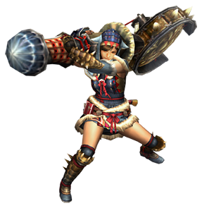
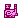
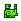
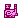
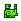

狩獵笛
出自多玩《怪物獵人P3》數據庫
 武器：太刀 - 大劍 - 片手劍 - 斬擊斧 - 雙刀 - 錘子 - 長槍 - 銃槍 - 狩獵笛 - 弓 - 輕弩 - 重弩
武器：太刀 - 大劍 - 片手劍 - 斬擊斧 - 雙刀 - 錘子 - 長槍 - 銃槍 - 狩獵笛 - 弓 - 輕弩 - 重弩
|  |
註：
1，武器名稱前的小圖示

  
   分別代表稀有度1-7
分別代表稀有度1-7
2，點選武器名稱可以檢視其詳細資料（目前完善中）
3，等級標註為「上位*」的武器雖然等級是上位，但是因為靈鶴石在下位農場就能採集到，所以下位也可以製作
4，詳細吹奏效果：【狩獵笛的樂譜】
武器派生
古結云派生系
| 武器 | 稀有 | 攻擊 | 附加效果 | 音色 | 斬味 | 孔 | 等級 |
| ■古結云笛派生 | |||||||
| 古結云笛
| 1 | 50 | - | ♪ ♪ ♪ | - - - | 下位 | |
| ┗ 結云笛
| 1 | 70 | - | ♪ ♪ ♪ | - - - | 下位 | |
| ┣ 結云笛改
| 1 | 90 | - | ♪ ♪ ♪ | - - - | 下位 | |
| ┃ ┣ 結云大笛
| 2 | 130 | - | ♪ ♪ ♪ | - - - | 下位 | |
| ┃ ┗ 女武神之笛
| 2 | 120 | 火25 | ♪ ♪ ♪ | - - - | 下位 | |
| ┃ ┗ 女武神之笛改
| 3 | 150 | 火30 | ♪ ♪ ♪ | - - - | 下位 | |
| ┃ ┗ 女帝之笛
| 6 | 170 | 火40 | ♪ ♪ ♪ | O - - | 上位 | |
| ┃ ┗ 金笛 | 7 | 210 | 龍28 | ♪ ♪ ♪ | O - - | 上位 | |
| ┣ 金屬風笛
| 1 | 80 | 防禦力+10 | ♪ ♪ ♪ | O - - | 下位 | |
| ┃ ┗ 金屬風笛改
| 2 | 110 | 防禦力+12 | ♪ ♪ ♪ | O - - | 下位 | |
| ┃ ┣ 巨風笛
| 2 | 140 | 防禦力+15 | ♪ ♪ ♪ | O - - | 下位 | |
| ┃ ┃ ┣ 重風笛
| 3 | 170 | 防禦力+20 會心率 -5% | ♪ ♪ ♪ | O - - | 下位 | |
| ┃ ┃ ┃ ┣ 重風笛改 | 4 | 180 | 防禦力+25 會心率 -5% | ♪ ♪ ♪ | O - - | 上位* | |
| ┃ ┃ ┃ ┃ ┗ 巨響大笛 | 5 | 200 | 防禦力+25 會心率 -5% | ♪ ♪ ♪ | O - - | 上位 | |
| ┃ ┃ ┃ ┗ 硬骨笛 | 4 | 200 | - | ♪ ♪ ♪ | O O - | 上位 | |
| ┃ ┃ ┃ ┗ 硬骨笛改 | 5 | 210 | - | ♪ ♪ ♪ | O O - | 上位 | |
| ┃ ┃ ┃ ┗ 重骨笛
| 6 | 230 | - | ♪ ♪ ♪ | O O - | 上位 | |
| ┃ ┃ ┗ 迅影笛
| 3 | 140 | 會心率 40% | ♪ ♪ ♪ | - - - | 下位 | |
| ┃ ┃ ┗ 夜笛【逢魔】
| 6 | 180 | 會心率 40% | ♪ ♪ ♪ | O O - | 上位 | |
| ┃ ┣ 彩鳥鼓笛
| 2 | 130 | 火12 | ♪ ♪ ♪ | O - - | 下位 | |
| ┃ ┃ ┣ 彩鳥大鼓笛
| 3 | 160 | 火15 | ♪ ♪ ♪ | O - - | 下位 | |
| ┃ ┃ ┃ ┗ 彩鳥重鼓笛 | 5 | 190 | 火18 | ♪ ♪ ♪ | O O - | 上位 | |
| ┃ ┃ ┗ 63式軍樂口風琴
| 3 | 140 | 防禦力+16 水20 | ♪ ♪ ♪ | - - - | 下位 | |
| ┃ ┃ ┗ 63式軍樂口風琴改 | 5 | 190 | 防禦力+18 水22 | ♪ ♪ ♪ | - - - | 上位 | |
| ┃ ┃ ┗ 潛口泡沫笛
| 6 | 210 | 防禦力+22 水30 | ♪ ♪ ♪ | - - - | 上位 | |
| ┃ ┗ 土砂笙【戰之音】
| 2 | 140 | 會心率 -5% | ♪ ♪ ♪ | - - - | 下位 | |
| ┃ ┣ 土砂笙【獸之音】
| 3 | 160 | 會心率 -10% | ♪ ♪ ♪ | - - - | 下位 | |
| ┃ ┃ ┣ 土砂笙【嚴之音】 | 5 | 210 | 會心率 -30% | ♪ ♪ ♪ | - - - | 上位 | |
| ┃ ┃ ┗ 冰霜笛 | 5 | 180 | 會心率 -20% 冰20 | ♪ ♪ ♪ | O O - | 上位 | |
| ┃ ┃ ┗ 霜凍牙笛
| 6 | 200 | 會心率 -25% 冰25 | ♪ ♪ ♪ | O O - | 上位 | |
| ┃ ┗ 炎戈燃火笛
| 3 | 140 | 會心率 15% 火35 | ♪ ♪ ♪ | - - - | 下位 | |
| ┃ ┗ 炎戈燃火笛改 | 4 | 160 | 會心率 25% 火42 | ♪ ♪ ♪ | - - - | 上位 | |
| ┃ ┗ 炎戈紅蓮笛
| 6 | 180 | 會心率 35% 火45 | ♪ ♪ ♪ | - - - | 上位 | |
| ┣ 青熊笛【壹式】
| 1 | 120 | - | ♪ ♪ ♪ | - - - | 下位 | |
| ┃ ┗ 青熊笛【貳式】
| 2 | 150 | - | ♪ ♪ ♪ | - - - | 下位 | |
| ┃ ┣ 青熊笛【叁式】 | 4 | 200 | - | ♪ ♪ ♪ | - - - | 上位 | |
| ┃ ┣ 轟龍笛
| 3 | 160 | 會心率 -20% | ♪ ♪ ♪ | - - - | 下位 | |
| ┃ ┃ ┗ 轟虎龍笛 | 4 | 170 | 會心率 -20% | ♪ ♪ ♪ | - - - | 上位 | |
| ┃ ┃ ┣ 轟鼓【虎鐘】
| 6 | 200 | 會心率 -20% | ♪ ♪ ♪ | - - - | 上位 | |
| ┃ ┃ ┗ 暴君虎鼓 | 5 | 200 | 會心率 -20% | ♪ ♪ ♪ | O O - | 上位 | |
| ┃ ┃ ┗ 吼鼓【鬼咬】
| 6 | 220 | 會心率 -20% | ♪ ♪ ♪ | O O - | 上位 | |
| ┃ ┣ 失落之笛
| 3 | 140 | 會心率 20% 冰30 | ♪ ♪ ♪ | - - - | 下位 | |
| ┃ ┃ ┗ 失落之笛改 | 5 | 160 | 會心率 20% 冰36 | ♪ ♪ ♪ | - - - | 上位 | |
| ┃ ┃ ┗ 冰牙霜凍笛
| 6 | 190 | 會心率 25% 冰40 | ♪ ♪ ♪ | - - - | 上位 | |
| ┃ ┗ 爆錘笛
| 3 | 170 | 防禦力+30 | ♪ ♪ ♪ | - - - | 下位 | |
| ┃ ┗ 爆錘笛改 | 4 | 190 | 防禦力+35 | ♪ ♪ ♪ | - - - | 上位 | |
| ┃ ┣ 爆裂碎震笛
| 6 | 210 | 防禦力+40 | ♪ ♪ ♪ | - - - | 上位 | |
| ┃ ┗ 鋼錘笛 | 5 | 200 | 防禦力+20 火15 | ♪ ♪ ♪ | O - - | 上位 | |
| ┃ ┗ 鋼錘響震笛
| 6 | 220 | 防禦力+30 火20 | ♪ ♪ ♪ | O - - | 上位 | |
| ┗ 水獸笛
| 2 | 120 | 水32 | ♪ ♪ ♪ | O - - | 下位 | |
| ┣ 水獸笛改
| 3 | 150 | 水38 | ♪ ♪ ♪ | O - - | 下位 | |
| ┃ ┗ 水獸潮笛 | 5 | 180 | 水42 | ♪ ♪ ♪ | O - - | 上位 | |
| ┗ 黑之棺
| 3 | 130 | 毒25 | ♪ ♪ ♪ | O - - | 下位 | |
| ┗ 影之棺 | 4 | 150 | 毒32 | ♪ ♪ ♪ | O - - | 上位 | |
| ┣ 暗之棺
| 6 | 170 | 毒38 | ♪ ♪ ♪ | O - - | 上位 | |
| ┗ 鮮血之棺 | 5 | 150 | 麻痹10 | ♪ ♪ ♪ | - - - | 上位 | |
| ┗ 泣血之棺
| 6 | 170 | 麻痹16 | ♪ ♪ ♪ | - - - | 上位 |
飛甲蟲的旋律派生系
| 武器 | 稀有 | 攻擊 | 附加效果 | 音色 | 斬味 | 孔 | 等級 |
| ■飛甲蟲的旋律派生 | |||||||
| 飛甲蟲的旋律
| 1 | 80 | - | ♪ ♪ ♪ | - - - | 下位 | |
| ┣ 飛甲蟲的節奏
| 1 | 100 | - | ♪ ♪ ♪ | - - - | 下位 | |
| ┃ ┣ 飛甲蟲的旋律灰
| 2 | 120 | 冰8 | ♪ ♪ ♪ | O - - | 下位 | |
| ┃ ┃ ┗ 飛甲蟲的節奏灰 | 4 | 170 | 冰12 | ♪ ♪ ♪ | O O - | 上位 | |
| ┃ ┗ 飛甲蟲的旋律黃
| 2 | 120 | 雷8 | ♪ ♪ ♪ | O - - | 下位 | |
| ┃ ┗ 飛甲蟲的節奏黃 | 4 | 170 | 雷12 | ♪ ♪ ♪ | O O - | 上位 | |
| ┗ 飛甲蟲的旋律綠
| 2 | 90 | 麻痹12 | ♪ ♪ ♪ | - - - | 下位 | |
| ┗ 飛甲蟲的節奏綠
| 3 | 110 | 麻痹18 | ♪ ♪ ♪ | O - - | 下位 | |
| ┗ 斑斕拘束大提琴 | 4 | 130 | 麻痹24 | ♪ ♪ ♪ | O - - | 上位 |
風化嚴重的狩獵笛派生系
| 武器 | 稀有 | 攻擊 | 附加效果 | 音色 | 斬味 | 孔 | 等級 |
| ■風化嚴重的狩獵笛派生 | |||||||
| 風化嚴重的狩獵笛 | 4 | 110 | 會心率 -70% | ♪ ♪ ♪ | - - - | 上位 | |
| ┗ 風化的狩獵笛 | 4 | 110 | 會心率 -70% | ♪ ♪ ♪ | - - - | 上位 | |
| ┗ 啟明星盤八音盒
| 6 | 180 | 防禦力+15 龍35 | ♪ ♪ ♪ | - - - | 上位 |
魔法少女變身棒派生系
| 武器 | 稀有 | 攻擊 | 附加效果 | 音色 | 斬味 | 孔 | 等級 |
| ■魔法少女變身棒派生 | |||||||
| 魔法少女變身棒
| 2 | 90 | 龍20 | ♪ ♪ ♪ | - - - | 下位 | |
| ┗ 魔法少女變身棒改
| 3 | 130 | 龍30 | ♪ ♪ ♪ | - - - | 下位 | |
| ┗ 魔法少女變身棒＝鈴鐺 | 5 | 190 | 龍40 | ♪ ♪ ♪ | - - - | 上位 |
卷貝殼笛派生系
| 武器 | 稀有 | 攻擊 | 附加效果 | 音色 | 斬味 | 孔 | 等級 |
| ■卷貝殼笛派生 | |||||||
| 卷貝殼笛
| 2 | 80 | 會心率 20% | ♪ ♪ ♪ | O O - | 下位 | |
| ┗ 卷貝殼笛改
| 3 | 150 | 會心率 30% | ♪ ♪ ♪ | O O O | 下位 | |
| ┗ 巨大卷貝殼笛 | 5 | 170 | 會心率 35% | ♪ ♪ ♪ | O O O | 上位 |
真結云笛派生系
| 武器 | 稀有 | 攻擊 | 附加效果 | 音色 | 斬味 | 孔 | 等級 |
| ■真結云笛派生 | |||||||
| 真結云笛
| 3 | 150 | - | ♪ ♪ ♪ | - - - | 下位 | |
| ┗ 真結云笛改 | 4 | 170 | - | ♪ ♪ ♪ | - - - | 上位 | |
| ┗ 結云雅笛【千鳥】
| 6 | 190 | - | ♪ ♪ ♪ | - - - | 上位 |
王琴轟雷派生系
| 武器 | 稀有 | 攻擊 | 附加效果 | 音色 | 斬味 | 孔 | 等級 |
| ■王琴轟雷派生 | |||||||
| 王琴轟雷
| 3 | 150 | 雷28 | ♪ ♪ ♪ | O - - | 下位 | |
| ┗ 王牙琴【鳴雷】
| 6 | 190 | 雷34 | ♪ ♪ ♪ | O - - | 上位 |
兇琴【秋嵐】派生系
| 武器 | 稀有 | 攻擊 | 附加效果 | 音色 | 斬味 | 孔 | 等級 |
| ■兇琴【秋嵐】派生 | |||||||
| 兇琴【秋嵐】 | 7 | 240 | 會心率 -20% 水16 | ♪ ♪ ♪ | - - - | 上位 |
覇笛•御霸殘音派生系
| 武器 | 稀有 | 攻擊 | 附加效果 | 音色 | 斬味 | 孔 | 等級 |
| ■覇笛•御霸殘音派生 | |||||||
| 覇笛•御霸殘音 | 7 | 250 | 會心率 40% | ♪ ♪ ♪ | - - - | 上位 |
崩笛•浮世震鳴派生系
| 武器 | 稀有 | 攻擊 | 附加效果 | 音色 | 斬味 | 孔 | 等級 |
| ■崩笛•浮世震鳴派生 | |||||||
| 崩笛•浮世震鳴 | 7 | 250 | 防禦力+15 會心率 -20% 冰16 | ♪ ♪ ♪ | - - - | 上位 |
電音貝斯笛派生系
| 武器 | 稀有 | 攻擊 | 附加效果 | 音色 | 斬味 | 孔 | 等級 |
| ■電音貝斯笛派生 | |||||||
| 電音貝斯笛
| 3 | 140 | 雷36 | ♪ ♪ ♪ | - - - | 配信 | |
| ┗ 巨型電音貝斯笛
| 6 | 180 | 雷40 | ♪ ♪ ♪ | - - - | 配信 |
狩獵笛攻略心得
圖文
| · 十五的個人MHP3狩獵笛使用心得 | 2010.12.31 |
| · | >>更多 |
視訊
| · | >>更多 |
狩獵笛倍率資料
作者更新中，請先行點選到論壇檢視，完成後將更新到WIKI
武器：太刀 - 大劍 - 片手劍 - 斬擊斧 - 雙刀 - 錘子 - 長槍 - 銃槍 - 狩獵笛 - 弓 - 輕弩 - 重弩